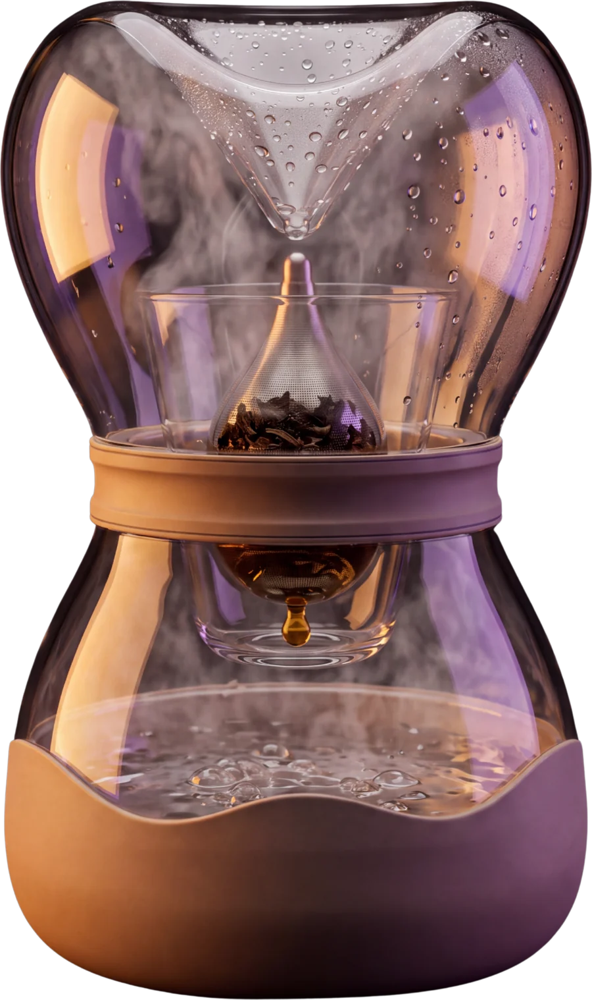
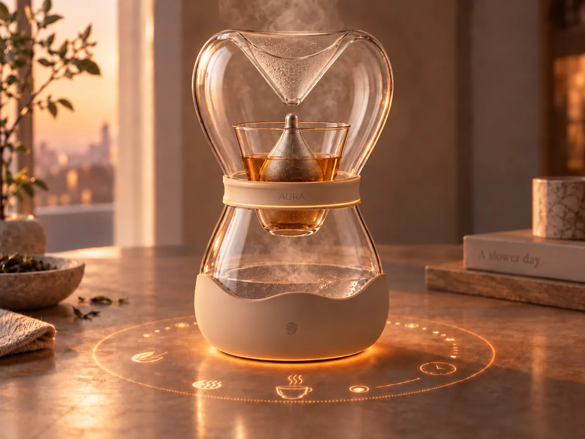
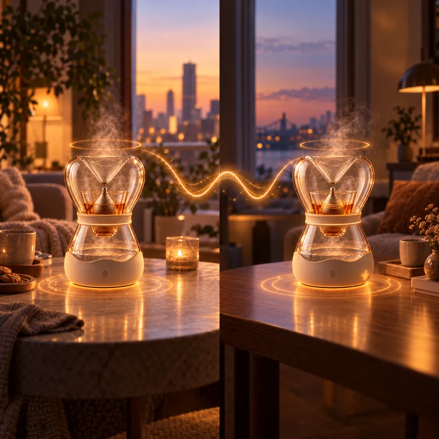

01 — The kitchen, 2040
The Frankfurt Kitchen was designed to save minutes. A century later, the kitchen is no longer a room.
We work from anywhere, live in smaller spaces and move more often. Screens claim our attention from the first alarm to the last scroll.
AURA reduces the kitchen to one quiet gesture: a short pause that belongs only to you.
02 — The object
A screenless brewer, shaped like an hourglass.

- 1
Upper glass lid
- 2
Strainer
- 3
Glass cup
- 4
AURA Ring
- 5
Brewing base
03 — How it brews
Time you can watch.

- 01 · Warm
- 02 · Rise
- 03 · Condense
- 04 · Drop
04 — Light follows the brew
A fingertip on the base is enough.

05 — Six leaves, six moments
One ritual for each moment screens usually take.
06 — Alone, or together apart
Tea with someone far away.
